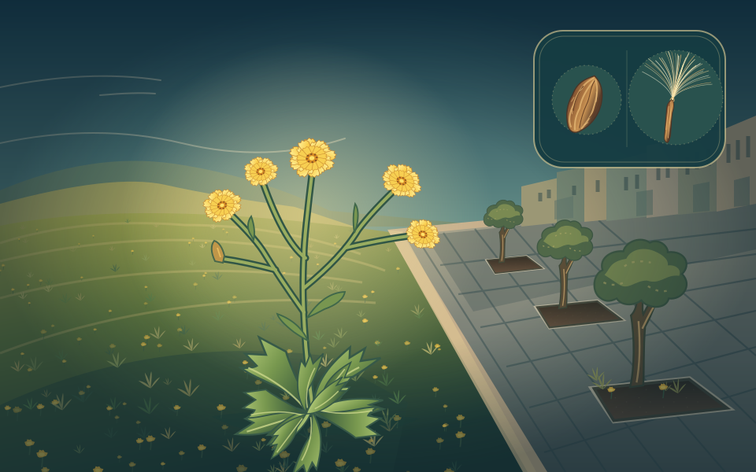
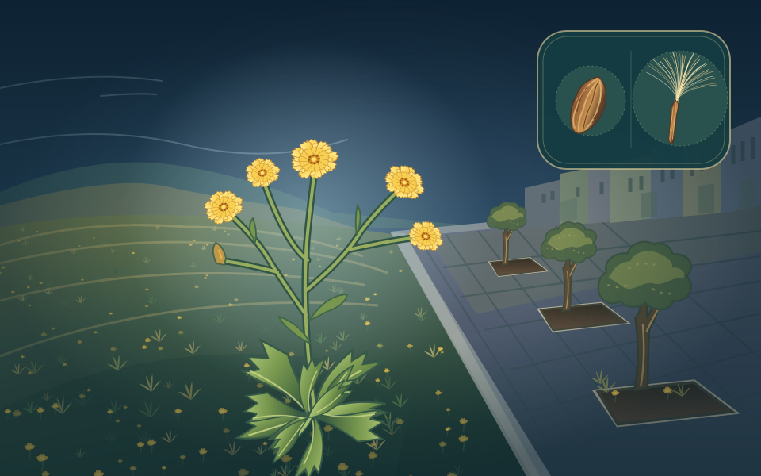
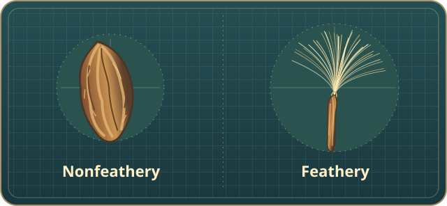

Unit 4 · Lesson 2 · Virtual investigation
Hawksbeard Wind Lab
Same seeds. Same wind. Different places to land.


01 · Notice and predict
Where will the seeds land?

One hawksbeard plant makes both kinds of seeds. Feathery seeds can travel farther in the wind. Nonfeathery seeds usually fall closer to the parent.
Matched releases: In both places, each plant releases 8 feathery and 2 nonfeathery seeds along the same wind paths. The city has smaller, separate soil patches. The field has more connected soil. This model changes both the amount and layout of soil, so it can’t tell which change mattered more.
02 · Matched investigation
Release the same seeds over both maps
Each release sends the same 10 seed paths over both layouts. Model limit: Landing on suitable soil shows where a seed could sprout. This model does not measure germination or later generations.
Each new trial draws new wind paths. Reloading keeps the same trial. The Dataset ID is included in your download. Dataset ID:
Seed key
- FeatheryFeather shape · dotted trail
- NonfeatheryDiamond shape · dashed trail
○ Soil landing× Missed soil⊕ Release point
Earlier releases fade to small dots (feathery) and diamonds (nonfeathery).
Field Connected soil
City Separated soil patches
03 · Read the results
Compare what landed
Write your comparison reflection to unlock Explain.
Your trial
Model limit: The layouts differ in both the amount and arrangement of soil.
Read the fractions
Same top number, different bottom numbers. For the nonfeathery landing rate, divide by all nonfeathery seeds released. For the nonfeathery share of landings, divide by all seeds that reached soil, including feathery seeds.
04 · Explain with evidence
Use your own results
Evidence from your trial
Use the evidence at the right scale: Your counts are simulated soil landings, not germination, survival, or reproduction. The two layouts differ in both soil amount and patch arrangement, so this comparison cannot separate those effects.
Compare with published research
Other downloads and backups
Use these plain-text options to keep a copy of your work. They do not restore your progress.
What this model does and does not show
The two layouts model connected field soil and fragmented city soil. The same starts and wind paths are used for both. The field and city also have different amounts of soil, so this comparison does not isolate fragmentation from total habitat area.
Landings are simulated. A seed on suitable soil could germinate; this model does not test actual germination, reproduction, inheritance, or a later generation. The optional research comparison is separate from your simulated results.